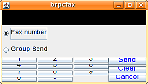
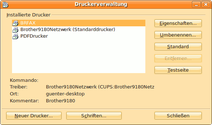
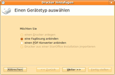
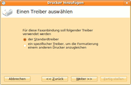
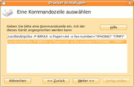
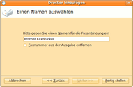
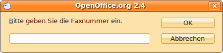

Brother
Dieser Artikel wurde für die folgenden Ubuntu-Versionen getestet:
Ubuntu 16.04 Xenial Xerus
Ubuntu 14.04 Trusty Tahr
Zum Verständnis dieses Artikels sind folgende Seiten hilfreich:
Brother  bietet für eine Reihe von Fax-Geräten bzw. Multifunktionsgeräten zwei Arten von Fax-Treibern an, mit denen es möglich ist, direkt vom Computer aus zu faxen. Auch netzwerkfähige Fax-Geräte werden unterstützt. Treiberunterstützungen sind nun für alle Fax-fähigen Geräte von Brother verfügbar.
bietet für eine Reihe von Fax-Geräten bzw. Multifunktionsgeräten zwei Arten von Fax-Treibern an, mit denen es möglich ist, direkt vom Computer aus zu faxen. Auch netzwerkfähige Fax-Geräte werden unterstützt. Treiberunterstützungen sind nun für alle Fax-fähigen Geräte von Brother verfügbar.
Fax-Modem-Treiber¶
Mit diesem wird das Faxen vom und der Empfang am PC möglich.
Installation¶
Von Brother werden
DEB-Pakete  angeboten.
Die unterstützten Ubuntuversionen und Architekturen werden aufgelistet.
Nachdem man sie für die korrekte Ubuntuversion und Architektur geladen hat, müssen DEB-Pakete noch installiert werden.
angeboten.
Die unterstützten Ubuntuversionen und Architekturen werden aufgelistet.
Nachdem man sie für die korrekte Ubuntuversion und Architektur geladen hat, müssen DEB-Pakete noch installiert werden.
Hinweis!
Fremdpakete können das System gefährden.
Bitte zum Abschnitt "FAX modem driver" wechseln, dort wird das deb-Paket zur Verfügung gestellt. Der Installationsvorgang entspricht dem des brmfcfax-Treibers.
Konfiguration¶
Hinweis:
Nur für Laser-Fax und Laser-Multifuntionsgeräte ohne LAN-Schnittstelle.
Zum Abschluss noch die Datei /etc/efax.rc mit einem Text-Editor [4] und Root-Rechten öffnen. Der Eintrag
DEV=ttyS1
muss in
DEV=modem
geändert und die Datei gespeichert werden, erst dann klappt die Verbindung.
brmfcfax-Treiber¶
Die weitaus größere Anzahl von Geräten wird über einen Treiber namens brmfcfax unterstützt, jedoch bietet dieser lediglich die Möglichkeit an, vom PC aus zu faxen. Neuere Geräte ab Baujahr 2009, die hier nicht aufgeführt sind und die zusätzlich mit einer LAN- oder WLAN-Schnittstelle ausgeliefert wurden, sollten mit den aktuellen Brother-Treibern funktionieren. Die unterstützten Geräte sind der Tabelle zu entnehmen:
| brmfcfax Treiber Kompatibilität | |||||
| Fax-Geräte | |||||
| FAX-1800C | FAX-1815C | FAX-1820C | FAX-1835C | FAX-1840C | |
| FAX-1860C | FAX-1920CN | FAX-1940CN | FAX-1960C | FAX-2440C | |
| FAX-2480C | FAX-2580C | FAX-2820 | FAX-2920 | FAX-4750e | |
| FAX-5750e | |||||
| Multifunktionsgeräte | |||||
| MFC-210C | MFC-215C | MFC-230C | MFC-235C | MFC-240C | |
| MFC-260C | MFC-265C | MFC-290C | MFC-3220C | MFC-3240C | |
| MFC-3320CN | MFC-3340CN | MFC-3360C | MFC-3420C | MFC-3820CN | |
| MFC-410CN | MFC-420CN | MFC-425CN | MFC-440CN | MFC-465CN | |
| MFC-4800 | MFC-490CW | MFC-5440CN | MFC-5460CN | MFC-5490CN | |
| MFC-5840CN | MFC-5860CN | MFC-5890CN | MFC-620CN | MFC-640CW | |
| MFC-6490CW | MFC-660CN | MFC-665CW | MFC-6800 | MFC-680CN | |
| MFC-685CW | MFC-7220 | MFC-7225N | MFC-7320 | MFC-7340 | |
| MFC-7420 | MFC-7440N | MFC-7450 | MFC-7820N | MFC-7840N | |
| MFC-7840W | MFC-820CW | MFC-8220 | MFC-8420 | MFC-8440 | |
| MFC-845CW | MFC-8460N | MFC-8500 | MFC-8640D | MFC-8660DN | |
| MFC-8670DN | MFC-8820D | MFC-8820DN | MFC-8840D | MFC-8840DN | |
| MFC-885CW | MFC-8860DN | MFC-8870DW | MFC-9030 | MFC-9070 | |
| MFC-9160 | MFC-9180 | MFC-9420CN | MFC-9440CN | MFC-9660 | |
| MFC-9700 | MFC-9760 | MFC-9800 | MFC-9840CDW | MFC-9860 | |
| MFC-9880 | MFC-495CW | MFC-795CW | MFC-7320 | MFC-7340 | |
| MFC-7345N | MFC-7360N | MFC-7440N | MFC-7450 | MFC-7460DN | |
| MFC-7840N | MFC-7840W | MFC-7860DW | MFC-9120CN | MFC-9320CW | |
| MFC-9460CDN | MFC-9560CDW | MFC-9465CDN | MFC-9970CDW | MFC-J615W | |
| MFC-J630W | MFC-J6510DW | MFC-J6710DW | MFC-J6910DW | MFC-7362N | |
| MFC-7360 | MFC-9880 | ||||
Vorbereitung¶
Der Fax-Treiber benötigt eine vorhandene Installation des Paketes
cups
csh
lib32stdc++6
 mit apturl
mit apturl
Paketliste zum Kopieren:
sudo apt-get install cups csh lib32stdc++6
sudo aptitude install cups csh lib32stdc++6
Gemäß der Anleitung von Brother  benötigt der Faxtreiber zwei vorhandene Verzeichnisse. Falls diese noch nicht existieren, legt man diese am besten im Terminal [1] an:
benötigt der Faxtreiber zwei vorhandene Verzeichnisse. Falls diese noch nicht existieren, legt man diese am besten im Terminal [1] an:
sudo mkdir /usr/share/cups/model sudo mkdir /var/spool/lpd
Java¶
Die Brother PC-Fax-Treiber benötigen eine Java-Laufzeitumgebung (JRE).
Installation¶
Von Brother werden
DEB-Pakete angeboten.
Die unterstützten Ubuntuversionen und Architekturen werden aufgelistet.
Nachdem man sie für die korrekte Ubuntuversion und Architektur geladen hat, müssen DEB-Pakete noch installiert werden.
Hinweis!
Fremdpakete können das System gefährden.
Hinweis:
Es muss zuerst der Fax-LPR, dann der Fax-Cups-Treiber installiert werden.
Leider liegen die Treiber nur in einer 32-bit-Fassung auf den Brother-Servern. Unter 64-bit-Sytemen gibt man im Terminal [1] nacheinander ein:
sudo dpkg -i --force-architecture *brmfcfax-lpr*.deb sudo dpkg -i --force-architecture *brmfcfax-cups*.deb
Je nach Konfiguration können Fehlermeldungen aufgrund der libc6-Abhängigkeit des Fax-Treibers unter 64-bit-Systemen vorkommen, daher sollte in diesem Fall der brfax oder brmfcfaxcups Treiber angepasst werden.
dpkg -x [package].deb common dpkg --control [package].deb nano DEBIAN/control Löschen der Zeile "Depends: libc6 (>= 2.3.4-1)" cp -a DEBIAN/ common/ dpkg -b common [package].deb sudo dpkg --force-all -i [package].deb rm -rf common DEBIAN
Es kann vorkommen, dass es beim Installieren des brfaxlpr-Treibers zur einer Fehlermeldung zur Bibliothek libc6:386 kommt. Es sollteb dann die 3 Pakete gcc-4.7-base:i386 (4.7.2-2ubuntu1) - libc6:i386 (2.15-0ubuntu20) - libgcc1:i386 (1:4.7.2-2ubuntu1) neu installiert. Danach sollte der brfaxlpr-Treiber sowie der brfaxcups-Treiber erneut installiert werden.
Einstellungen¶
Wenn beide Treiberpakete installiert sind, ist ein zusätzliches Gerät unter
"System -> Einstellungen -> Drucken"
installiert worden. Standardmäßig wird das Gerät am USB-Anschluss eingestellt. Wenn jedoch das Fax-Gerät im Netzwerk genutzt wird, muss die korrekte Geräte-Verbindung bzw. URI eingestellt werden, siehe den Artikel Printserver oder unter Systemeinstellungen, Drucker den BRFAX-Drucker auswählen, unter "Eigenschaften -> Geräte-URI -> Ändern auf Netzwerkdrucker" suchen. Dort sollte man den Netzwerkdrucker mit angezeigter IP-Adresse anwählen und das App-Socket/Jet-Direkt Modul auswählen (in neueren Versionen wird das Modul automatisch gewählt) und auf "OK"
 -klicken, bzw. siehe auch die Anleitung von Brother unter Step 5b. (Network Connection)
-klicken, bzw. siehe auch die Anleitung von Brother unter Step 5b. (Network Connection)
Hinweis:
Es müsste in Version 13.10 noch kontrolliert werden, ob unter "Systemeinstellung -> Drucker -> BRFAX" im Reiter "Marke und Modell" der Eintrag "Brother BRMFCFAX for CUPS" steht. Andernfalls über "Ändern" den BRFAX-Treiber nochmals auswählen. Nun sollte der Treiber funktionieren.
Es müssen noch die Datei brfaxfilter im Verzeichnis /usr/lib/cups/filter/ ausführbar gemacht werden:
sudo chmod 755 /usr/lib/cups/filter/brfaxfilter
Nun sollte man sich vom System ab- und wieder anmelden.
Java Pfad anpassen¶
Die Brother Fax-Software verweist auf einen fehlerhaften Java-Programmpfad, daher wird mittels eines Editors [3] mit Root-Rechten die Datei /usr/bin/brpcfax geöffnet. Etwa in der Zeile 37 befindet sich der Eintrag
extarg="`java -jar /usr/local/Brother/fax/brmfcfax.jar 2>/dev/null`"
Dieser wird nun mit dem korrektem Pfad zur Java Engine ersetzt.
Wenn man OpenJDK installiert hat - also das Paket openjdk-6-jre oder openjdk-7-jre - dann ist der korrekte Programmpfad /usr/lib/jvm/java-6-openjdk/bin/java oder /usr/lib/jvm/java-7-openjdk/bin/java. Folglich wird die ganze Zeile wie folgt abgeändert:
openjdk-6-jre:
extarg="`/usr/lib/jvm/java-6-openjdk/bin/java -jar /usr/local/Brother/fax/brmfcfax.jar 2>/dev/null`"
openjdk-7-jre:
extarg="`/usr/lib/jvm/java-7-openjdk/bin/java -jar /usr/local/Brother/fax/brmfcfax.jar 2>/dev/null`"
openjdk-9-jre amd64:
extarg="`/usr/lib/jvm/java-9-openjdk-amd64/bin/java -jar /usr/local/Brother/fax/brmfcfax.jar 2>/dev/null`"
Danach wird die Datei geschlossen und das Programm brpcfax ausgeführt [5]. Ist der Pfad zur Java-Version korrekt, wird nun eine grafische Oberfläche angezeigt.
Hinweis:
Die Treiber von Brother arbeiten mit OpenJDK-Versionen ohne größere Probleme.
Qualität¶
CUPS¶
Die Qualitätseinstellungen können mit der GNOME Druckerkonfiguration bzw. im Falle von KDE unter KDE Druckerkonfiguration vorgenommen werden. Hier den neuen Treiber "BRFAX" auswählen und diesen konfigurieren. Als Papiergröße DIN A4 verwenden.
Fax senden¶

Druckdialog¶
Leider ist es nicht möglich, direkt aus jeder Anwendung heraus ein Dokument zu faxen, daher geht man einen Umweg und druckt das gewünschte Dokument in eine Datei als .ps oder jedes sonstige unterstützte Dateiformat aus. Dann wählt man die Datei aus, macht einen Rechtsklick darauf und gibt eine neue Anwendung an, die man im Kontextmenü über "Öffnen mit" erreicht. Hier gibt man nun den benutzerdefinierten Befehl
/usr/bin/brpcfax -P BRFAX -o Paper=A4
an, um das Dokument im DIN-A4 Format zu faxen.
Terminal¶
Das Brother Fax-Programm unterstützt die gängigen Bildformate wie: .jpg, .pdf, .txt, .gif, .png, .tiff und .ps. Die grafische Oberfäche der Brother Fax-Software startet man mit dem folgenden Befehl [3]:
brpcfax '''Dateiname'''
Hier gibt man nur noch die Faxnummer des Empfängers ein und klickt auf "Send". Möchte man direkt im Terminal die Faxnummer eingeben, verwendet man diesen Befehl:
brpcfax -o fax-number=0566-55-12345 '''Dateiname''' # Telefonnummer anpassen
Gruppen Fax¶
Um ein Fax an mehrere Empfänger gleichzeitig zu versenden, muss im Vorfeld eine Liste z.B. uus.txt (max. 50 Einträg) mit einem Editor [3] angelegt werden:
# Team # ubuntuusers.de # # - wird als Pause gewertet # ~ (Tilde) nicht benutzen # march (wiki-mod) 0123456789 # Philipp B (wiki-mod) 0987654321
Mit der Option fax-broadcast wird die Datei uus.txt aufgerufen [2]
brpcfax -o fax-broadcast=/home/march/uus.txt xxxxxxx.ps
und die Datei an alle Empfänger versendet.
OpenOffice.org / LibreOffice.org¶
Um per OpenOffice.org oder LibreOffice ein Fax zu versenden, muss die OpenOffice-eigene oder LibreOffice-eigene Druckerverwaltung ausgeführt werden und eine Faxanbindung eingerichtet werden. Daher führt man in einem Terminal [1] den folgenden Befehl aus:
/usr/lib/openoffice/program/spadmin
oder für LibreOffice
/usr/lib/libreoffice/program/spadmin
In der Druckerverwaltung nun eine Faxanbindung auswählen. Zuerst "Neuer Drucker..." anwählen und "Eine Faxlösung einbinden" anwählen - mit "weiter" zur nächsten Seite gelangen - und den Standardtreiber auswählen. Nachdem dieser mit "Weiter" hinterlegt wurde als Befehlszeile folgendes einfügen:
/usr/bin/brpcfax -P BRFAX -o Paper=A4 -o fax-number="(PHONE)" "(TMP)"
Für die Faxanbindung einen aussagekräftigen Namen (z.B. Brother Fax) verwenden und ansonsten keine Änderungen vornehmen. Mit "Fertig" werden die Änderungen übernommen.
Um in OpenOffice.org oder LibreOffice die Funktion nutzen zu können hier unter "Datei -> Drucken..." im Feld "Name" die Faxlösung unter dem eben gewählten Namen auswählen und mit "OK" auswählen. Im nächsten Programmfenster die Fax-Nummer eingeben. Nachdem dies mit "OK" bestätigt wurde wird das Fax versendet.
Hinweis:
Sollte das Dialogfeld zur Eingabe der Fax-Nummer nicht erscheinen, muss im Druck-Dialog unter Eigenschaften, Gerät die Druckersprache von PDF auf PostSkript(Level des Treibers) umgestellt werden.
|  |
| 1. OpenOffice Druckermanager |
|  |
| 2. Gerätetyp auswählen |
|  |
| 3. Treiber auswählen |
|  |
| 4. Kommandozeile auswählen |
|  |
| 5. Namen vergeben |
|  |
| 6. Faxnummer eingeben |
- Erstellt mit Inyoka
-
 2004 – 2017 ubuntuusers.de • Einige Rechte vorbehalten
2004 – 2017 ubuntuusers.de • Einige Rechte vorbehalten
Lizenz • Kontakt • Datenschutz • Impressum • Serverstatus -
Serverhousing gespendet von